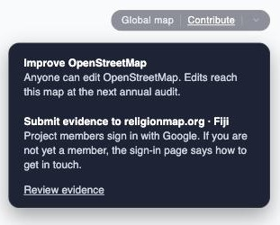
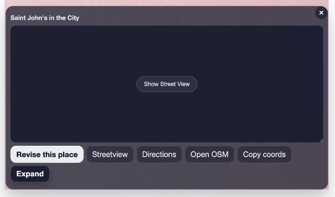
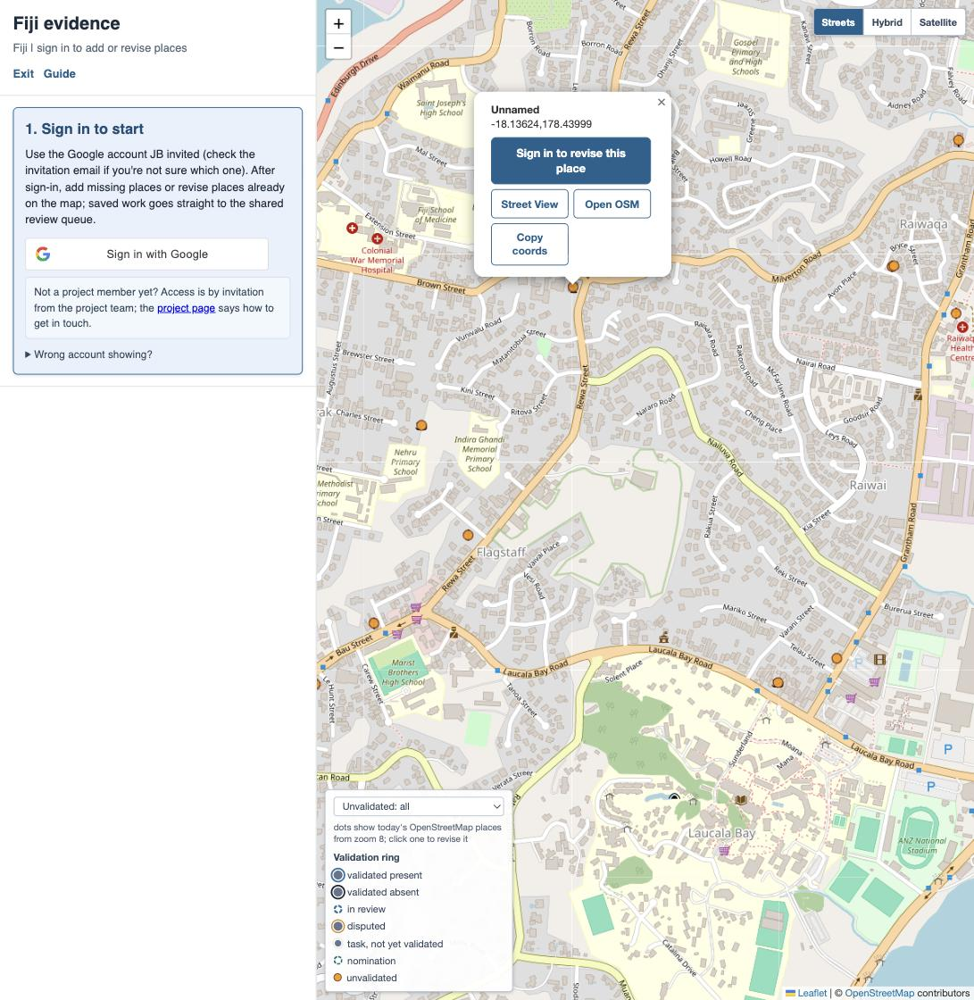
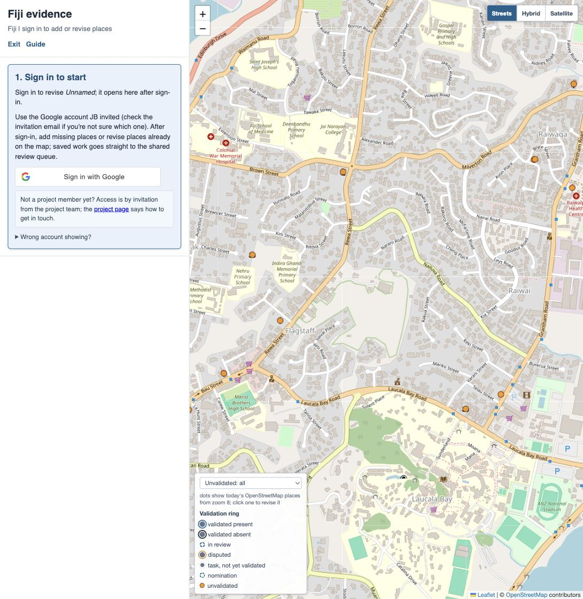
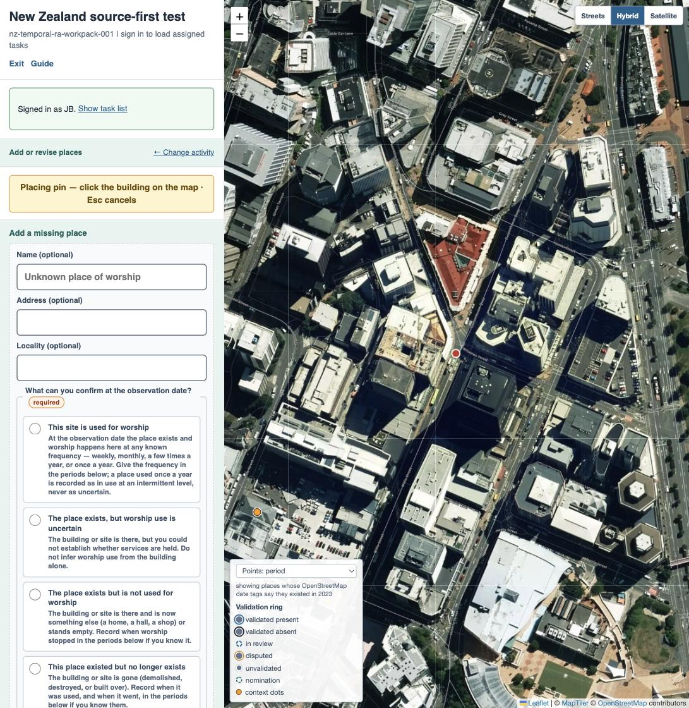
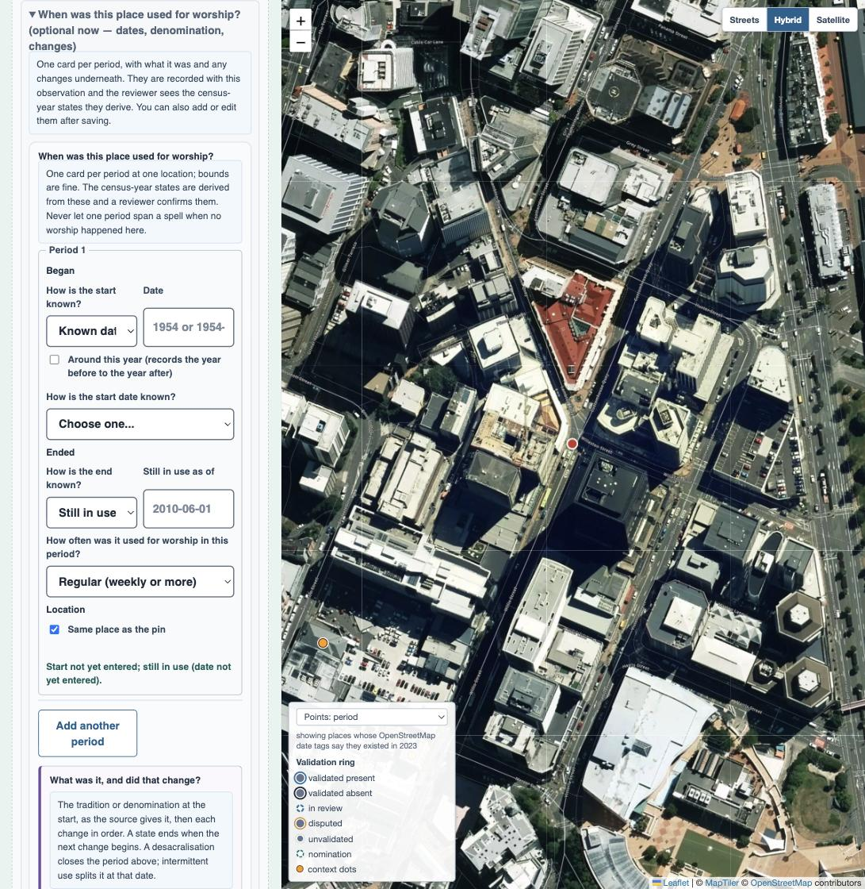

religionmap.org · week in review
Anyone on the team can now add or revise a place of worship in any country, and say when it was used
This page summarises what the places-of-worship project built between 28 August and 4 September 2026, shows the new screens, and asks for your feedback on any part of it: the workflow, the wording, the colours, the data model, or the science it serves.
How to send feedback. Reply to Joseph's email, or open an issue on the public repository at github.com/go-bayes/places-of-worship. Nothing is too small: a confusing label or an unreadable colour is as useful to us as a design objection. Section 6 lists the questions we most want answered.
1. From the public map into the evidence portal, for any country
Until this week the public map was a shop front with no door. A visitor who noticed a missing church or a wrong name could edit OpenStreetMap, but the project's own evidence portal was reachable only for New Zealand and 23 other configured countries, and only by people who knew its address. The public map and every one of the 100 country pages now offer a Contribute entry with three ways in: improve OpenStreetMap (open to anyone), submit evidence to religionmap.org (project members), and review evidence (reviewers). The second names the country under the map, so a member looking at Suva is offered the Fiji portal, not the New Zealand one.


The portal itself now opens for any country. A world registry of 198 countries supplies the name, the camera, and the census target years where we have them. Where no country-specific data product exists yet, the portal draws every place-of-worship point from the same map tiles the public map uses, so a member in Fiji, Tonga, or Kenya sees today's OpenStreetMap places and can revise any of them. The review portal uses the same registry, so every country has a review lane from the first submission. Signed out, a visitor can still see the dots, look at Street View, and open the OpenStreetMap record; pressing Sign in to revise this place remembers the place and opens it after sign-in.


2. Where and when a place was used for worship
The scientific object of the project is not a building but a time-indexed state: was this site used for recurring religious worship at a given date? This week the portal started recording that state directly. When a member adds or revises a place, the form asks what they can confirm at the observation date (in use, exists but use uncertain, exists but not used, no longer exists) with a sentence of guidance under each option. Below that, one card per period records when worship began and ended, how each date is known, how often the place was used, and where it stood. A period may begin with a known date, a range, or a bound; an end may be unknown without blocking the record.


Under the period cards, the function chain records what the place was at the start (the tradition or denomination as the source gives it) and each change in order, including desacralisation and the resumption of worship. From the periods, the server derives a presence state for each census year (present, absent, or uncertain) with the rule that produced it; from the chain, it derives the denomination in force in that year. A reviewer confirms, overrides, or rejects each derived year. The derivations are recomputed whenever the underlying periods change, and an author cannot confirm their own. The exported evidence table includes the derived state and denomination for every census year.
Three further changes serve the same object. First, every add-place flow in every country now asks how sure the contributor is of the location and records an uncertainty radius, which the server converts to a location grade (parcel, street, locality, or area). Second, the OpenStreetMap edit history of a clicked record is shown as context, with the first place-of-worship tagging presented as the earliest OpenStreetMap evidence rather than as a founding date. Third, revising an existing record now collects the same evidence as adding a new one, including photographs and documents, and every named source goes into a shared source register that reviewers can cross-reference.
3. Review
Review work now runs from a claim pool. A reviewer claims a task, cannot review their own submission, and may request a second or third opinion. A reviewer who needs more from the contributor can return the task for comment, and the contributor's answer comes back on the same task. The reviewer sees the derived census-year states with their rules, the location grade and any pin movement, the OpenStreetMap history, and the attachments. Every country now has a review lane.
4. Data in, and the definition
Robert Woodberry's Vanuatu mission-station data entered the review queue this week through a new bulk occupancy import: 80 stations across the Catholic and Protestant atlases, each with its periods, waiting for reviewer confirmation. The import writes the same period records the portal writes, so bulk and hand-entered data are reviewed by the same rules.
The operational definition of a place of worship advanced three times, from version 0.1.2 to version 0.1.5. Version 0.1.3 records why criterion 3 says worship "by or for" a community, which places chaplaincies and specialist-performed worship in scope. Version 0.1.4 makes a place of worship a continuant: it may relocate or be rebuilt and remain the same place, and identity is recorded as an explicit, revisable review decision rather than lodged in the building. Version 0.1.5 states how a recorded frequency of use enters the census-year derivation, with the amendment that an annual service is certain knowledge of rare use rather than uncertainty. Each version is kept as an immutable snapshot so a study can cite the rule it used.
5. A design pass is under way, and your eye is wanted
The screens above show the portal as it looks today, and they show the problem. Three surfaces written at different times disagree on colour, type size, and button style. An audit this week counted about 120 distinct colours in the portal stylesheet and found amber doing seven jobs at once; text that research assistants read for hours is set at caption size; and several controls fall below the contrast that accessibility guidelines require. Joseph has ruled on the policy questions, and a pass that reduces the three surfaces to one system of tokens is being built now. Three decisions in particular deserve a second opinion from the team:
- Unvalidated places (today's OpenStreetMap points that nobody has yet verified) change from amber to a small slate-grey disc with a white halo, so that amber can mean only "needs attention": uncertain, disputed, or a caution.
- On phones, Contribute joins the bottom row of actions and offers only the link to the portal, since the OpenStreetMap editor does not work on a phone.
- Priority leaves colour altogether and becomes a word in the task row, because a red-green priority dot beside a green status pill cannot be told apart by readers with the commonest colour-vision deficiency.
If you have opinions about colour, type, or layout, this is the week to voice them. The full audit and decision set is in the repository at docs/development/ui-design-audit-2026-09-03.md.
6. Where we most want your feedback
- The observation options. Are the four options in the add-place form (in use; exists but use uncertain; exists but not used; no longer exists) the right partition for what you can observe in the field or in a source? Is any case missing or ambiguous?
- Periods and the function chain. Does one card per period, with the function chain beneath, match how your sources describe a place's history? Is there a kind of change the chain cannot express?
- Derived census-year states. The server derives present, absent, or uncertain for each census year from the periods. Would you trust a derived state you had not entered yourself, given that a reviewer must confirm it? Would you want to see the rule that produced it?
- The unvalidated dots. Every country's portal now shows today's OpenStreetMap places as revisable dots. Is that the right promise to make to a new research assistant, or does it invite revision of places we know nothing about?
- Review. Is the claim pool, with second opinions and return-for-comment, enough for the review you expect to do? What would you need that is not there?
- Design. Anything about colour, type size, wording, or layout, on any screen, on any device.
7. Try it
- The public map. Zoom to a country and open Contribute at the top right.
- The Fiji page, one of the 100 country pages.
- The evidence portal for Fiji. Change
fjto any two-letter country code. - The review portal for New Zealand, for reviewers.
- The research-assistant guide, which walks through the portal step by step.
- The changelog, which records every change with the ruling behind it.
Access to the portal is by invitation. If you are on the team and your Google account is not yet recognised, tell Joseph which account to invite.
By the numbers
| Pull requests merged, 28 August to 3 September | 41 |
|---|---|
| Countries the evidence and review portals now open for | 198 |
| Country pages with the Contribute entry | 100, plus the global map |
| Vanuatu mission stations imported for review | 80 |
| Operational definition | version 0.1.5 |